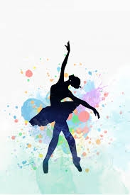
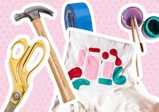

About Me
Profile
I am Karthika A Nair a first year B.Tech student who loves coding. I major in Computer Science at Amrita Vishwa Vidyapeetham, Kollam. Great knowledge of mutliple programming languages and software development tools , excellent problem-solving skills and ability to perform well in teams are some of my major traits. I believe my fast learning abilities, commitment to succeed and relevant studies make me a better engineer
Bio-Data
| Name | Karthika A Nair |
|---|---|
| Qualification | Student |
| Date of Birth (Age) | 29/11/2001 (18) |
| Gender | Female |
| Height | 1.53m |
| Father's Name | Anoop S Nair |
| Mother's Name | Bindu Anoop Nair |
| Siblings | Vyshakh A Nair(Age: 13) |
| Nationality | Indian |
Hobbies
Reading is one of my hobbies. I enjoy reading and have always been a voracious reader. Although I prefer reading fiction, I make a delibrate effort to read other genres. What I truly treasure about reading is its power to imagine a whole different world than the actual one.It's amazing how a few words have so many interpretations and how it can awaken so emotions and thoughts within us.This hobby has helped me develop analytical thinking and open-mindedness. It also helped in widening my imagination.
I love learning new languages. I'm a fluent speaker of 3 languages and I am trying my best to learn few more.I learn various languages like Korean and French thourgh learning app on my phone. It is good way of keeping my brain and learning faculties from getting lazy. It excites me that I shall be able to see movies without subtitles, read original texts and connect freely with more people. It is wonderful how there are similarities that exist between various languages and it amuses me that this also means closeness of different cultures. My love for languages is because of the pleasure I take in reading and traveling.
I am fond of dancing, it is both my hobby and passion. Sometimes even during the day, I play music on my phone and dance my heart out, even if its for just 5 minutes! Dance helps me relax as it invigorates my soul. Scientifically, dancing is proven to release endorphins. Hence, not only is it a lot of fun, it also ensures that I stay happy and positive all the time! Personally, I feel that dance is the best workout and also a great way to unleash your creative side.
I have always been a very creative person and find it relaxing to indulge in craft activities. There is modern term for this:"Do-It-Yourself"orDIY. Making handmade things enables me to think on my own to create new designs. I simply make personalized gifts for my family and friends. It's a gesture they never forget!
I and my family loving growing veggies on our own. We have many kinds of fruits growing around our house. We also grow vegetables and grow chicks. This is something we do together. In this way we spend time with each other helping each other to do things.